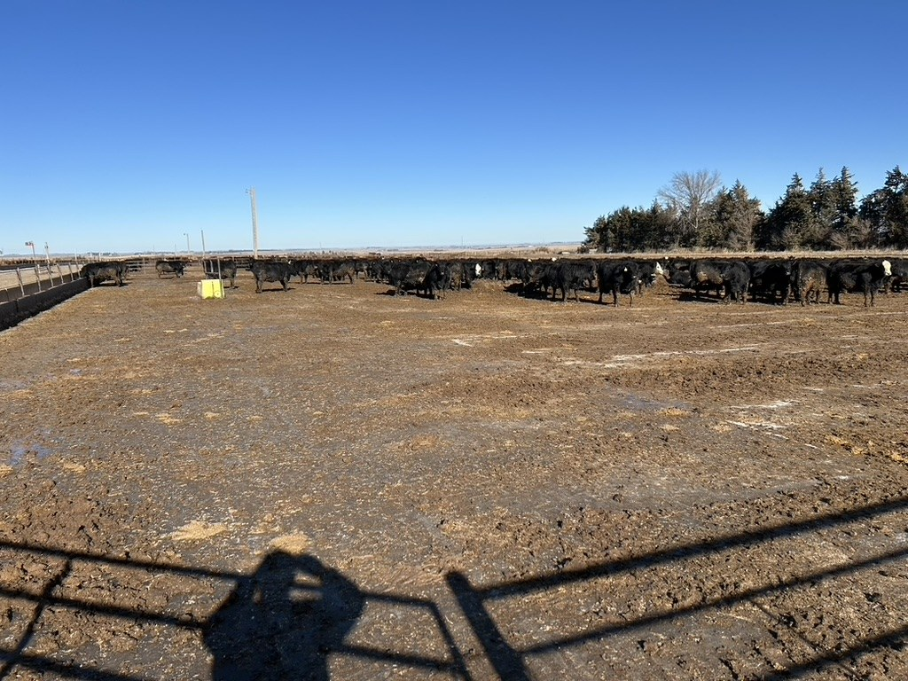
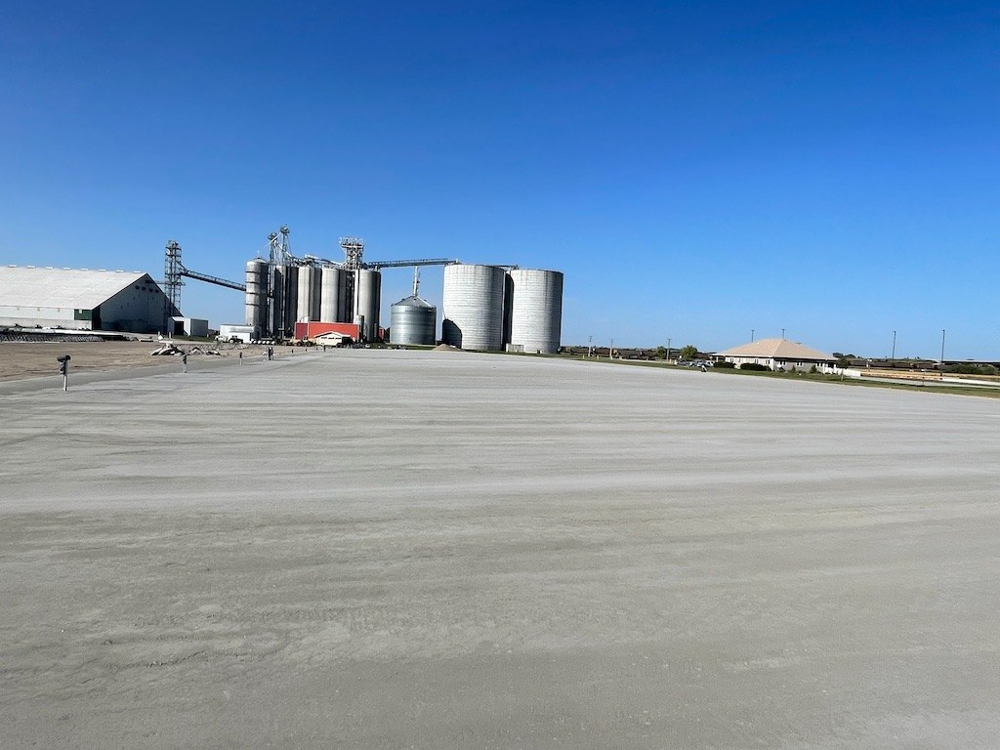
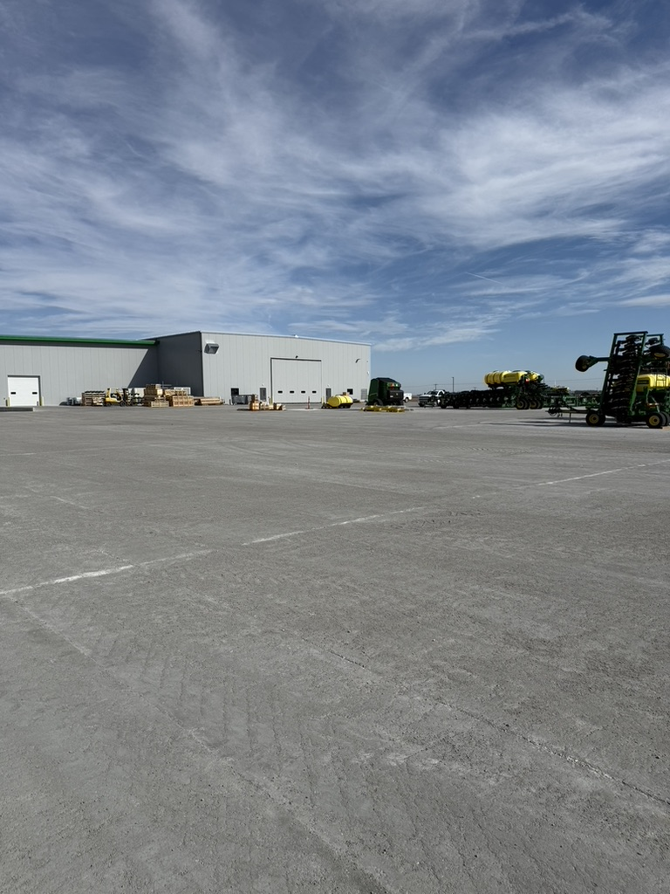
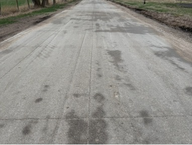

ROLLER COMPACTED CONCRETE
What is Roller Compacted Concrete?
A dense, high-strength concrete pavement system installed with efficient paving and vibratory compaction.
Talk About Your Project →THE BASICS
Concrete strength. Efficient installation. Lasting performance.
RCC is a low-slump concrete mixture of aggregate, cement and water. It is placed with precision equipment and compacted with vibratory rollers to create a dense pavement surface. RCC installation is faster than traditional concrete placement and far more durable than asphalt. Most RCC projects are ready for traffic within 72 hours after compaction.
01
Mix
Materials are mixed on-site using a portable pugmill to maintain a precise mix design.
02
Place
The concrete is placed with precision equipment suited to the project.
03
Compact
Vibratory rollers compact the concrete to achieve the required density.
04
Finish
Curing compound is applied, and concrete can be saw cut for a finished look.
APPLICATIONS
Where RCC fits.
RCC can be adapted to many sites where a durable pavement surface and efficient construction process are important.


Commercial & Industrial
Parking, shipping, loading, manufacturing and logistics surfaces.
Learn more →
KEY BENEFITS
Strength, speed and long-term value.
RCC combines the strength and longevity of concrete with an efficient paving process, making it a practical alternative to traditional concrete and asphalt for demanding applications.
High Structural Integrity
Designed to withstand frequent, heavy loads with excellent resistance to deformation and wear.
Rapid Construction
RCC requires no conventional forms or reinforcing steel, allowing crews to place large areas efficiently. Depending on site conditions, projects can exceed 2 acres of placement per day.
Minimal Downtime
Fast placement and early strength allow many projects to return to service in days rather than weeks.
Low Maintenance
A dense, durable surface helps reduce the need for recurring resurfacing, patching, and repairs.
Long-Term Durability
RCC provides the strength and service life needed for heavy-duty applications, from feedlots and industrial yards to roadways and storage facilities.
Sustainable Construction
Efficient placement, reduced material waste, and a long service life can help reduce the overall environmental impact of a pavement system.
At Rock Solid RCC, we help customers balance cost, construction speed, and long-term performance. Whether you're building a feedlot surface, city roadway, grain facility, or industrial container pad, RCC provides a durable solution built for demanding use.
THE ROCK SOLID APPROACH
RCC is what we do.
Our team focuses on RCC paving rather than treating it as an add-on service. That specialization informs equipment selection, production, placement and quality control.
- High-capacity on-site production
- Precision placement and heavy-duty compaction
- Experience across agricultural, industrial and municipal environments
- Clear estimates and project communication
RCC RESOURCE
See how RCC paving comes together.
Our RCC installation guide explains site preparation, placement, roller compaction and curing. For a project comparison, read RCC vs. asphalt for heavy-duty sites.
NEXT STEP
Have an RCC pavement project?
We can review the application, site conditions and timeline with you.
Request an Estimate →